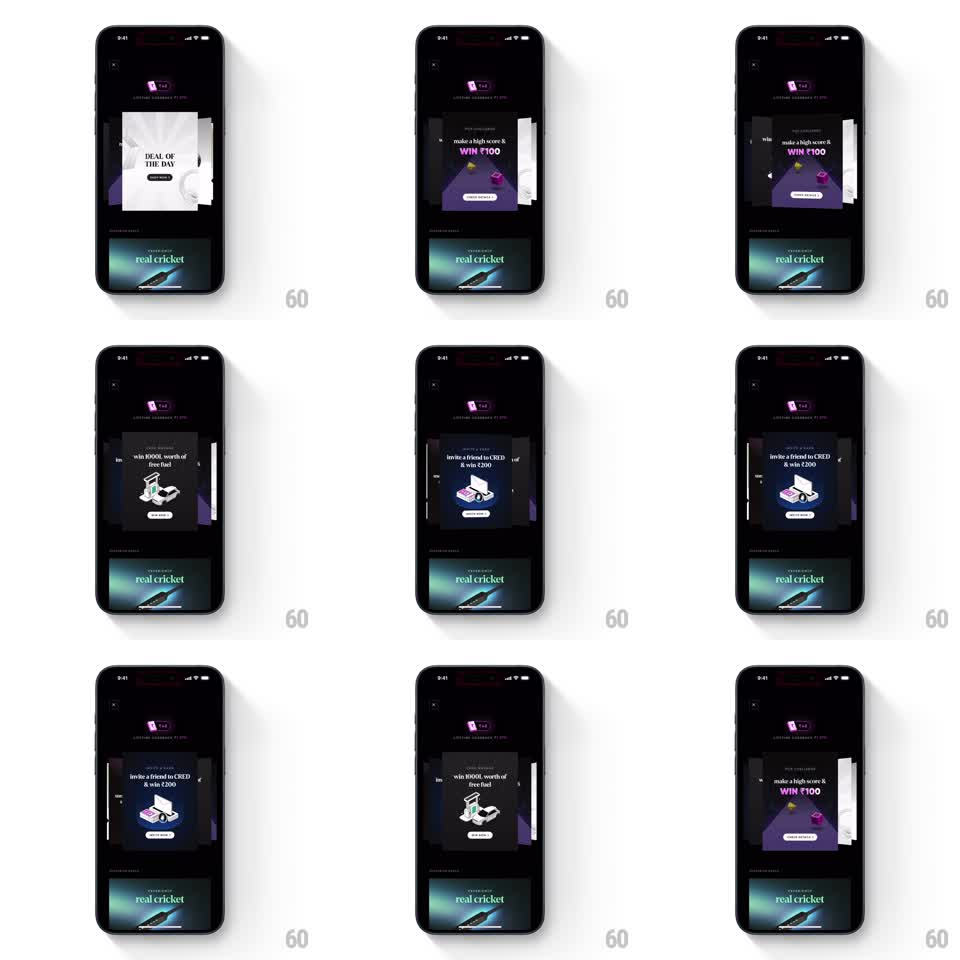

Media
Frame-by-frame

Rebuild this interaction 1:1: CRED's 3D card carousel - promo cards sit in a perspective stack and a horizontal swipe rotates the front card away while the next card swings into place.

Rebuild this interaction 1:1: CRED's 3D card carousel - promo cards sit in a perspective stack and a horizontal swipe rotates the front card away while the next card swings into place.
## Integration
Integration: stack-agnostic spec - springs given as stiffness/damping, timed motions as duration + curve; map every value to your framework and animation library of choice.
## Scene
Dark screen with a "1 of 2" progress pill at top. Center stage: a stack of promo cards ("DEAL OF THE DAY", "make a high score & WIN 100", "win 1000 worth of free fuel", "invite a friend to CRED & win 200"), each with an illustration and a CTA button. Cards behind peek out at the edges with perspective tilt.
## Motion spec
Pattern: 3D swipe carousel, ~700ms per swipe.
- At rest, the front card faces the viewer; cards behind are scaled to 0.92, pushed back in Z, tilted -6deg and +6deg at the left and right edges, and dimmed 30%.
- On drag, the front card follows the finger (translateX + rotateY up to 25deg), the stack behind shifting forward in anticipation.
- On release past threshold, the front card swings off in the drag direction (300ms, ease-in, continuing its rotation) as the next card swings into the front (spring stiffness 300 damping 22, rotation settling from its edge tilt to 0).
- Below threshold, the card springs back to center (stiffness 350 damping 20).
- The progress pill updates as the new card lands.
## Calibration
- Rotation and translation stay coupled to the finger - no autoplay feel.
- Edge cards tilt toward center, bookending the front card.
## Reduced motion
Cards crossfade instead of rotating.
## Don't miss
- The front card's CTA button stays crisp while the card rotates - no blur tricks.
- The depth is real: back cards are smaller, dimmer, and offset, not just translated.